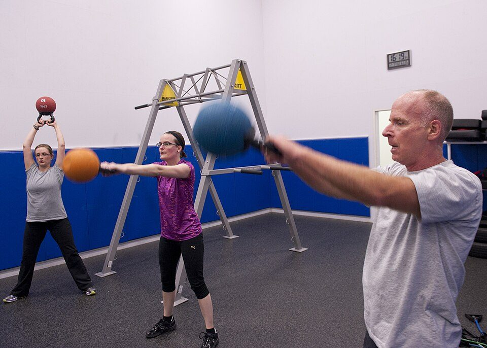

General information only. It does not replace advice from your care team and should not be used to choose a treatment.


What it is
The European Code Against Cancer is a set of recommendations drawn up by experts at the International Agency for Research on Cancer (IARC) with the support of the European Commission. It sums up what each person can do to reduce their risk, and what governments can do to make that easier. IARC updates it as new evidence emerges: check the current edition on its website.
The main recommendations
The recommendations of the fourth edition (2014), the most widely known, are:
- Do not smoke or use any form of tobacco.
- Make your home smoke-free, and support smoke-free policies at work.
- Keep a healthy body weight.
- Be physically active every day and limit time spent sitting.
- Eat a healthy diet: plenty of whole grains, pulses, fruit and vegetables; limit high-calorie foods and sugary drinks; avoid processed meat and limit red meat and salt.
- If you drink alcohol, limit it. Not drinking is best for cancer prevention.
- Avoid too much sun, especially for children, and do not use sunbeds.
- At work, protect yourself from cancer-causing substances by following safety instructions.
- Find out whether your home has high levels of radon, and reduce them if so.
- For women: breastfeeding reduces the mother's cancer risk. Limit the use of hormone replacement therapy.
- Make sure your children are vaccinated against hepatitis B (newborns) and human papillomavirus.
- Take part in organised screening programmes for bowel, breast and cervical cancer.
Prevention reduces the odds
Following these recommendations reduces risk but does not remove it: some cancers appear in people with very healthy habits, because of age, chance errors in DNA copying or inheritance. Nobody is to blame for their cancer. At the same time, across whole populations, prevention avoids hundreds of thousands of cases every year in Europe.
See also: Tobacco, alcohol and other risks, Vaccines that prevent cancer, Cancer screening.
Sources
- IARC. European Code Against Cancer. cancer-code-europe.iarc.who.int
- Schüz J, et al. European Code against Cancer 4th Edition: 12 ways to reduce your cancer risk. Cancer Epidemiol. 2015;39(Suppl 1):S1-S10. doi:10.1016/j.canep.2015.05.009
- WHO. Cancer. Fact sheet. who.int